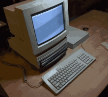
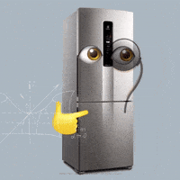

A Divisão de Papéis (Abstração por Camadas):
A relação entre eles funciona como uma pirâmide de camadas. O usuário interage com o topo, e o hardware processa a base:
- Camada do Usuário: Você interage com a interface visual (software de alto nível).
- Camada do Sistema: O Sistema Operacional traduz suas ações para o hardware.
- Camada de Drivers: Softwares específicos que ensinam o sistema a usar uma peça física.
- Camada de Firmware: Um software gravado diretamente dentro das peças de hardware.
- Camada Física: Os circuitos elétricos, chips e componentes que realizam o trabalho bruto.

~Exemplo de Interdependência:~
Dispositivos Inteligentes (IoT e Eletrodomésticos):
- O Hardware: O termostato de uma geladeira inteligente ou o sensor de presença de uma lâmpada.
- O Software: O aplicativo de automação residencial e o firmware do aparelho.
- A Complementação: O hardware capta a mudança física do ambiente (temperatura ou movimento) e o software decide se liga o motor da geladeira ou acende a luz com base na hora do dia.

~A Evolução Mútua: Um Empurra o Outro:~
A relação entre hardware e software é o motor da evolução tecnológica:
[Demanda por Softwares Mais Complexos (IA, Jogos, VR)]
↓ (exige mais do)
[Desenvolvimento de Hardwares Mais Rápidos e Eficientes]
↓ (permite a criação de)
[Softwares Ainda Mais Avançados e Pesados]

- O software puxa o hardware: Softwares de Inteligência Artificial e renderização 3D exigem chips cada vez menores, mais rápidos e que gastem menos energia.
- O hardware liberta o software: * Quando novos chips com arquiteturas inovadoras são lançados, os programadores ganham a liberdade de criar ferramentas que antes eram impossíveis de rodar.